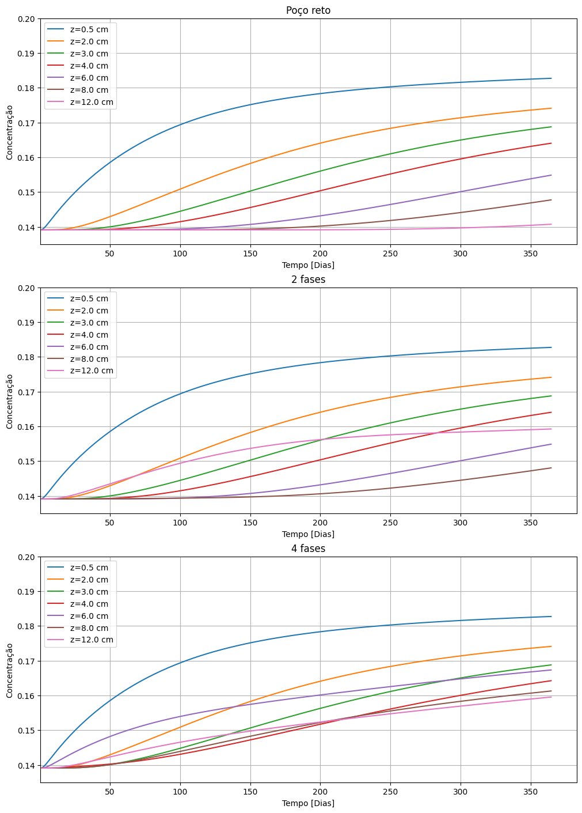
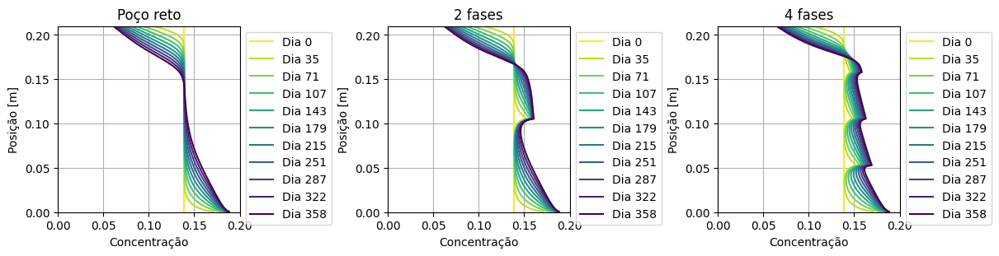
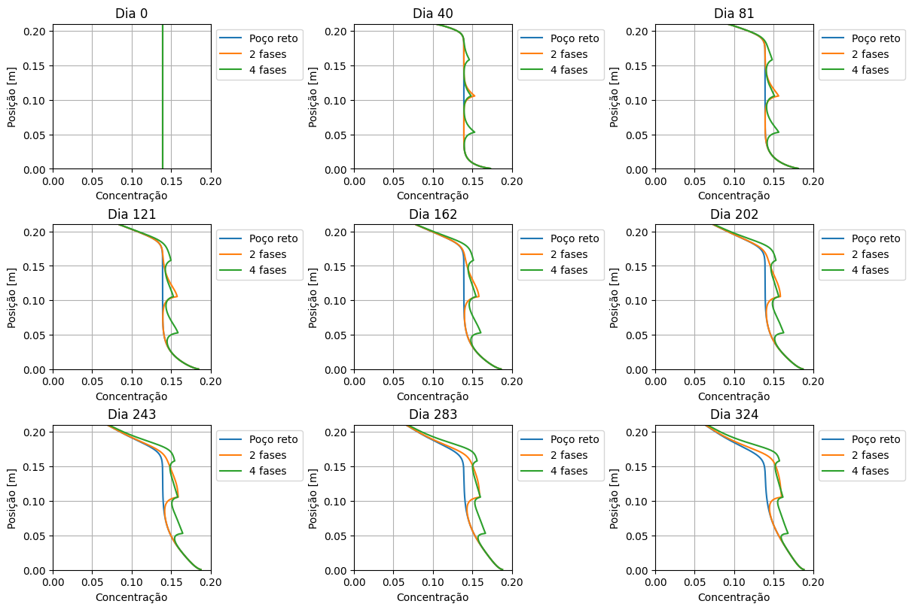
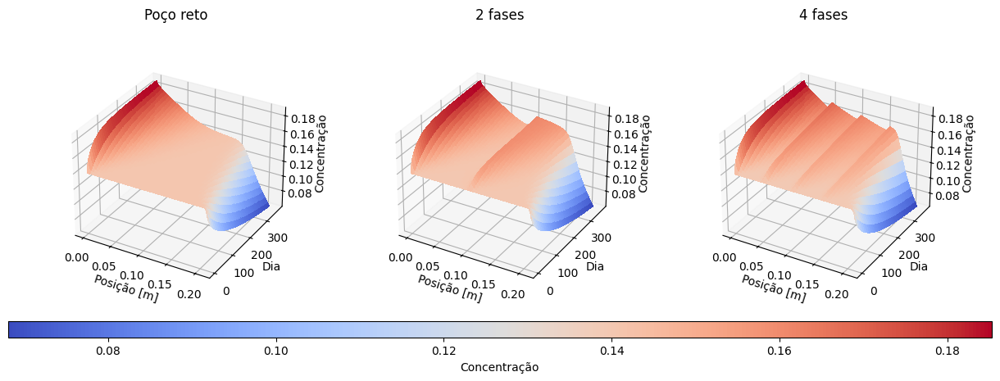
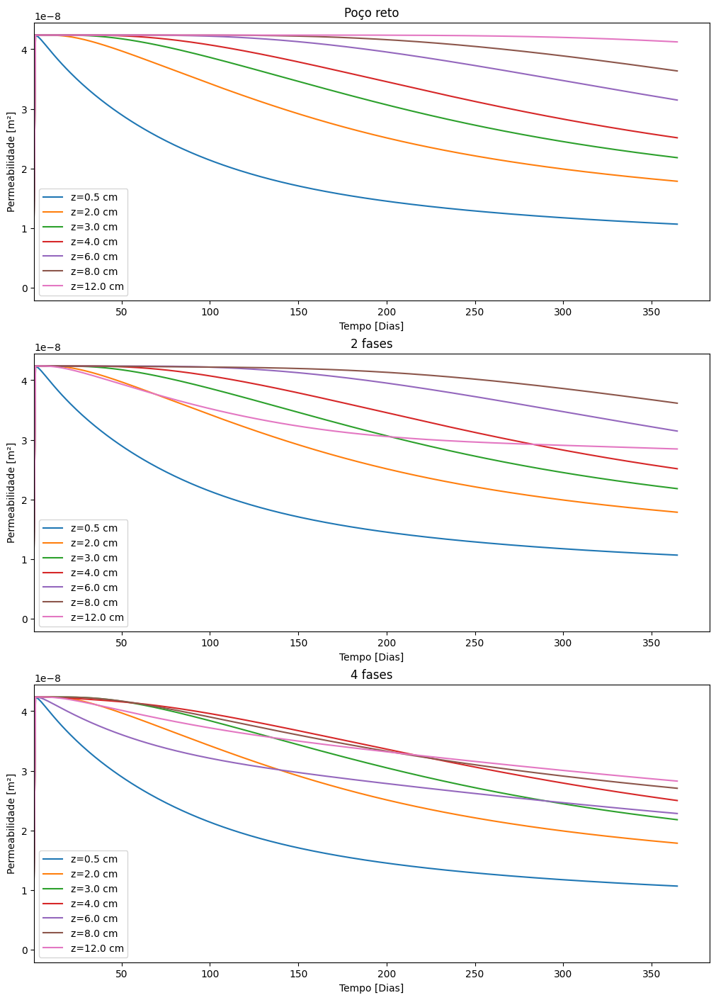
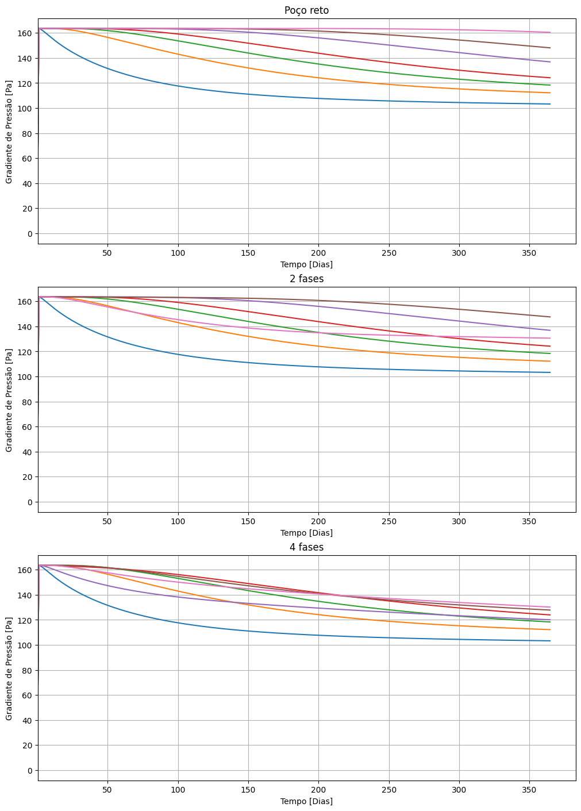

Variação de seção do poço#
Arquivo de configuração
[2]:
from modules.simulation.config.model import SimulationConfigModel
import pathlib
case_data = {
"poco_reto": {"title": "Poço reto"},
"2_fases": {"title": "2 fases"},
"4_fases": {"title": "4 fases"},
}
for case in case_data.keys():
cfg_path = pathlib.Path(f"./docs/source/_static/software/{case}.yaml")
cfg = SimulationConfigModel.from_file(cfg_path)
case_data[case]["cfg"] = cfg.model_copy()
case_data
[2]:
{'poco_reto': {'title': 'Poço reto',
'cfg': SimulationConfigModel(sim_name='poco_reto', domain=DomainModel(height=0.21, spatial_divisions=220, annular_domain=AnnularDomainModel(internal_radius=0.01, steps=[StepModel(position_z=0.05, radius=0.02)])), suspension=SuspensionModel(initial_conc=0.1391, max_conc=0.19), solid_phase=SolidPhaseModel(particle_diam=4.08e-05, particle_esphericity=0.8, density=2709.0), fluid_phase=FluidPhaseModel(density=891.4, power_law=PowerLawFluidModel(M=30.13, n=0.21)), simulation_parameters=SimulationParameters(timestep=1000.0, total_time=31536000.0), export=FrequencyConfig(frequency=100), report=FrequencyConfig(frequency=1000), HPHT=None, equation_parameters=EquationParameters(delta=0.622641, k0=47.601104, beta=0.04983, ref_conc=0.14, p_ref=63.640954))},
'2_fases': {'title': '2 fases',
'cfg': SimulationConfigModel(sim_name='2_fases', domain=DomainModel(height=0.21, spatial_divisions=220, annular_domain=AnnularDomainModel(internal_radius=0.01, steps=[StepModel(position_z=0.105, radius=0.02), StepModel(position_z=0.2, radius=0.03)])), suspension=SuspensionModel(initial_conc=0.1391, max_conc=0.19), solid_phase=SolidPhaseModel(particle_diam=4.08e-05, particle_esphericity=0.8, density=2709.0), fluid_phase=FluidPhaseModel(density=891.4, power_law=PowerLawFluidModel(M=30.13, n=0.21)), simulation_parameters=SimulationParameters(timestep=1000.0, total_time=31536000.0), export=FrequencyConfig(frequency=100), report=FrequencyConfig(frequency=1000), HPHT=None, equation_parameters=EquationParameters(delta=0.622641, k0=47.601104, beta=0.04983, ref_conc=0.14, p_ref=63.640954))},
'4_fases': {'title': '4 fases',
'cfg': SimulationConfigModel(sim_name='4_fases', domain=DomainModel(height=0.21, spatial_divisions=220, annular_domain=AnnularDomainModel(internal_radius=0.01, steps=[StepModel(position_z=0.0525, radius=0.02), StepModel(position_z=0.105, radius=0.03), StepModel(position_z=0.1575, radius=0.04), StepModel(position_z=0.2, radius=0.05)])), suspension=SuspensionModel(initial_conc=0.1391, max_conc=0.19), solid_phase=SolidPhaseModel(particle_diam=4.08e-05, particle_esphericity=0.8, density=2709.0), fluid_phase=FluidPhaseModel(density=891.4, power_law=PowerLawFluidModel(M=30.13, n=0.21)), simulation_parameters=SimulationParameters(timestep=1000.0, total_time=31536000.0), export=FrequencyConfig(frequency=100), report=FrequencyConfig(frequency=1000), HPHT=None, equation_parameters=EquationParameters(delta=0.622641, k0=47.601104, beta=0.04983, ref_conc=0.14, p_ref=63.640954))}}
Run simulations
[29]:
import time
from modules.simulation.sim_handler import SimulationHandler
for case in case_data.keys():
cfg = case_data[case]["cfg"]
output_path = pathlib.Path(f"./out/{cfg.sim_name}")
sim_handler = SimulationHandler(cfg=cfg, output_path=output_path)
start = time.time()
sim_handler.start_simulation()
end = time.time()
print("\nTempo total de simulação:" + str(end - start) + " [s]")
print("Status da simulação: " + sim_handler.sim_status)
print("Exportando resultados...")
sim_handler.export_sim_data()
sim_handler.export_domain_polydata(frequency_reduction=100)
[2024-09-08 23:55:05,005] [INFO] - simulation - Starting simulation... (sim_handler.py:87)
[2024-09-08 23:55:05,006] [INFO] - simulation - Current time 0 (sim_handler.py:88)
[2024-09-08 23:55:05,752] [INFO] - simulation - Simulation report: Current time 1000000.0 (sim_handler.py:73)
[2024-09-08 23:55:05,753] [INFO] - simulation - Mass conservation report: Deviation 3.48E-06% (sim_handler.py:61)
[2024-09-08 23:55:06,499] [INFO] - simulation - Simulation report: Current time 2000000.0 (sim_handler.py:73)
[2024-09-08 23:55:06,500] [INFO] - simulation - Mass conservation report: Deviation 3.48E-06% (sim_handler.py:61)
[2024-09-08 23:55:07,296] [INFO] - simulation - Simulation report: Current time 3000000.0 (sim_handler.py:73)
[2024-09-08 23:55:07,297] [INFO] - simulation - Mass conservation report: Deviation 3.48E-06% (sim_handler.py:61)
[2024-09-08 23:55:08,089] [INFO] - simulation - Simulation report: Current time 4000000.0 (sim_handler.py:73)
[2024-09-08 23:55:08,090] [INFO] - simulation - Mass conservation report: Deviation 3.48E-06% (sim_handler.py:61)
[2024-09-08 23:55:08,871] [INFO] - simulation - Simulation report: Current time 5000000.0 (sim_handler.py:73)
[2024-09-08 23:55:08,872] [INFO] - simulation - Mass conservation report: Deviation 3.48E-06% (sim_handler.py:61)
[2024-09-08 23:55:09,578] [INFO] - simulation - Simulation report: Current time 6000000.0 (sim_handler.py:73)
[2024-09-08 23:55:09,579] [INFO] - simulation - Mass conservation report: Deviation 3.48E-06% (sim_handler.py:61)
[2024-09-08 23:55:10,327] [INFO] - simulation - Simulation report: Current time 7000000.0 (sim_handler.py:73)
[2024-09-08 23:55:10,327] [INFO] - simulation - Mass conservation report: Deviation 3.48E-06% (sim_handler.py:61)
[2024-09-08 23:55:11,044] [INFO] - simulation - Simulation report: Current time 8000000.0 (sim_handler.py:73)
[2024-09-08 23:55:11,045] [INFO] - simulation - Mass conservation report: Deviation 3.48E-06% (sim_handler.py:61)
[2024-09-08 23:55:11,747] [INFO] - simulation - Simulation report: Current time 9000000.0 (sim_handler.py:73)
[2024-09-08 23:55:11,748] [INFO] - simulation - Mass conservation report: Deviation 3.48E-06% (sim_handler.py:61)
[2024-09-08 23:55:12,485] [INFO] - simulation - Simulation report: Current time 10000000.0 (sim_handler.py:73)
[2024-09-08 23:55:12,487] [INFO] - simulation - Mass conservation report: Deviation 3.48E-06% (sim_handler.py:61)
[2024-09-08 23:55:13,215] [INFO] - simulation - Simulation report: Current time 11000000.0 (sim_handler.py:73)
[2024-09-08 23:55:13,216] [INFO] - simulation - Mass conservation report: Deviation 3.48E-06% (sim_handler.py:61)
[2024-09-08 23:55:13,930] [INFO] - simulation - Simulation report: Current time 12000000.0 (sim_handler.py:73)
[2024-09-08 23:55:13,931] [INFO] - simulation - Mass conservation report: Deviation 3.48E-06% (sim_handler.py:61)
[2024-09-08 23:55:14,651] [INFO] - simulation - Simulation report: Current time 13000000.0 (sim_handler.py:73)
[2024-09-08 23:55:14,651] [INFO] - simulation - Mass conservation report: Deviation 3.48E-06% (sim_handler.py:61)
[2024-09-08 23:55:15,368] [INFO] - simulation - Simulation report: Current time 14000000.0 (sim_handler.py:73)
[2024-09-08 23:55:15,369] [INFO] - simulation - Mass conservation report: Deviation 3.48E-06% (sim_handler.py:61)
[2024-09-08 23:55:16,157] [INFO] - simulation - Simulation report: Current time 15000000.0 (sim_handler.py:73)
[2024-09-08 23:55:16,158] [INFO] - simulation - Mass conservation report: Deviation 3.48E-06% (sim_handler.py:61)
[2024-09-08 23:55:16,886] [INFO] - simulation - Simulation report: Current time 16000000.0 (sim_handler.py:73)
[2024-09-08 23:55:16,887] [INFO] - simulation - Mass conservation report: Deviation 3.48E-06% (sim_handler.py:61)
[2024-09-08 23:55:17,589] [INFO] - simulation - Simulation report: Current time 17000000.0 (sim_handler.py:73)
[2024-09-08 23:55:17,590] [INFO] - simulation - Mass conservation report: Deviation 3.48E-06% (sim_handler.py:61)
[2024-09-08 23:55:18,313] [INFO] - simulation - Simulation report: Current time 18000000.0 (sim_handler.py:73)
[2024-09-08 23:55:18,314] [INFO] - simulation - Mass conservation report: Deviation 3.48E-06% (sim_handler.py:61)
[2024-09-08 23:55:19,058] [INFO] - simulation - Simulation report: Current time 19000000.0 (sim_handler.py:73)
[2024-09-08 23:55:19,058] [INFO] - simulation - Mass conservation report: Deviation 3.48E-06% (sim_handler.py:61)
[2024-09-08 23:55:19,789] [INFO] - simulation - Simulation report: Current time 20000000.0 (sim_handler.py:73)
[2024-09-08 23:55:19,790] [INFO] - simulation - Mass conservation report: Deviation 3.48E-06% (sim_handler.py:61)
[2024-09-08 23:55:20,499] [INFO] - simulation - Simulation report: Current time 21000000.0 (sim_handler.py:73)
[2024-09-08 23:55:20,500] [INFO] - simulation - Mass conservation report: Deviation 3.48E-06% (sim_handler.py:61)
[2024-09-08 23:55:21,203] [INFO] - simulation - Simulation report: Current time 22000000.0 (sim_handler.py:73)
[2024-09-08 23:55:21,203] [INFO] - simulation - Mass conservation report: Deviation 3.48E-06% (sim_handler.py:61)
[2024-09-08 23:55:21,909] [INFO] - simulation - Simulation report: Current time 23000000.0 (sim_handler.py:73)
[2024-09-08 23:55:21,909] [INFO] - simulation - Mass conservation report: Deviation 3.48E-06% (sim_handler.py:61)
[2024-09-08 23:55:22,598] [INFO] - simulation - Simulation report: Current time 24000000.0 (sim_handler.py:73)
[2024-09-08 23:55:22,599] [INFO] - simulation - Mass conservation report: Deviation 3.48E-06% (sim_handler.py:61)
[2024-09-08 23:55:23,289] [INFO] - simulation - Simulation report: Current time 25000000.0 (sim_handler.py:73)
[2024-09-08 23:55:23,289] [INFO] - simulation - Mass conservation report: Deviation 3.48E-06% (sim_handler.py:61)
[2024-09-08 23:55:23,981] [INFO] - simulation - Simulation report: Current time 26000000.0 (sim_handler.py:73)
[2024-09-08 23:55:23,982] [INFO] - simulation - Mass conservation report: Deviation 3.48E-06% (sim_handler.py:61)
[2024-09-08 23:55:24,694] [INFO] - simulation - Simulation report: Current time 27000000.0 (sim_handler.py:73)
[2024-09-08 23:55:24,695] [INFO] - simulation - Mass conservation report: Deviation 3.48E-06% (sim_handler.py:61)
[2024-09-08 23:55:25,376] [INFO] - simulation - Simulation report: Current time 28000000.0 (sim_handler.py:73)
[2024-09-08 23:55:25,377] [INFO] - simulation - Mass conservation report: Deviation 3.48E-06% (sim_handler.py:61)
[2024-09-08 23:55:26,089] [INFO] - simulation - Simulation report: Current time 29000000.0 (sim_handler.py:73)
[2024-09-08 23:55:26,090] [INFO] - simulation - Mass conservation report: Deviation 3.48E-06% (sim_handler.py:61)
[2024-09-08 23:55:26,804] [INFO] - simulation - Simulation report: Current time 30000000.0 (sim_handler.py:73)
[2024-09-08 23:55:26,805] [INFO] - simulation - Mass conservation report: Deviation 3.48E-06% (sim_handler.py:61)
[2024-09-08 23:55:27,496] [INFO] - simulation - Simulation report: Current time 31000000.0 (sim_handler.py:73)
[2024-09-08 23:55:27,497] [INFO] - simulation - Mass conservation report: Deviation 3.48E-06% (sim_handler.py:61)
Tempo total de simulação:22.904600143432617 [s]
Status da simulação: finished
Exportando resultados...
[2024-09-08 23:55:31,477] [INFO] - simulation - Starting simulation... (sim_handler.py:87)
[2024-09-08 23:55:31,478] [INFO] - simulation - Current time 0 (sim_handler.py:88)
[2024-09-08 23:55:32,218] [INFO] - simulation - Simulation report: Current time 1000000.0 (sim_handler.py:73)
[2024-09-08 23:55:32,219] [INFO] - simulation - Mass conservation report: Deviation 3.48E-06% (sim_handler.py:61)
[2024-09-08 23:55:32,979] [INFO] - simulation - Simulation report: Current time 2000000.0 (sim_handler.py:73)
[2024-09-08 23:55:32,980] [INFO] - simulation - Mass conservation report: Deviation 3.48E-06% (sim_handler.py:61)
[2024-09-08 23:55:33,722] [INFO] - simulation - Simulation report: Current time 3000000.0 (sim_handler.py:73)
[2024-09-08 23:55:33,724] [INFO] - simulation - Mass conservation report: Deviation 3.48E-06% (sim_handler.py:61)
[2024-09-08 23:55:34,440] [INFO] - simulation - Simulation report: Current time 4000000.0 (sim_handler.py:73)
[2024-09-08 23:55:34,441] [INFO] - simulation - Mass conservation report: Deviation 3.48E-06% (sim_handler.py:61)
[2024-09-08 23:55:35,166] [INFO] - simulation - Simulation report: Current time 5000000.0 (sim_handler.py:73)
[2024-09-08 23:55:35,167] [INFO] - simulation - Mass conservation report: Deviation 3.48E-06% (sim_handler.py:61)
[2024-09-08 23:55:35,926] [INFO] - simulation - Simulation report: Current time 6000000.0 (sim_handler.py:73)
[2024-09-08 23:55:35,927] [INFO] - simulation - Mass conservation report: Deviation 3.48E-06% (sim_handler.py:61)
[2024-09-08 23:55:36,657] [INFO] - simulation - Simulation report: Current time 7000000.0 (sim_handler.py:73)
[2024-09-08 23:55:36,658] [INFO] - simulation - Mass conservation report: Deviation 3.48E-06% (sim_handler.py:61)
[2024-09-08 23:55:37,438] [INFO] - simulation - Simulation report: Current time 8000000.0 (sim_handler.py:73)
[2024-09-08 23:55:37,438] [INFO] - simulation - Mass conservation report: Deviation 3.48E-06% (sim_handler.py:61)
[2024-09-08 23:55:38,161] [INFO] - simulation - Simulation report: Current time 9000000.0 (sim_handler.py:73)
[2024-09-08 23:55:38,161] [INFO] - simulation - Mass conservation report: Deviation 3.48E-06% (sim_handler.py:61)
[2024-09-08 23:55:38,911] [INFO] - simulation - Simulation report: Current time 10000000.0 (sim_handler.py:73)
[2024-09-08 23:55:38,911] [INFO] - simulation - Mass conservation report: Deviation 3.48E-06% (sim_handler.py:61)
[2024-09-08 23:55:39,654] [INFO] - simulation - Simulation report: Current time 11000000.0 (sim_handler.py:73)
[2024-09-08 23:55:39,655] [INFO] - simulation - Mass conservation report: Deviation 3.48E-06% (sim_handler.py:61)
[2024-09-08 23:55:40,366] [INFO] - simulation - Simulation report: Current time 12000000.0 (sim_handler.py:73)
[2024-09-08 23:55:40,366] [INFO] - simulation - Mass conservation report: Deviation 3.48E-06% (sim_handler.py:61)
[2024-09-08 23:55:41,078] [INFO] - simulation - Simulation report: Current time 13000000.0 (sim_handler.py:73)
[2024-09-08 23:55:41,079] [INFO] - simulation - Mass conservation report: Deviation 3.48E-06% (sim_handler.py:61)
[2024-09-08 23:55:41,776] [INFO] - simulation - Simulation report: Current time 14000000.0 (sim_handler.py:73)
[2024-09-08 23:55:41,777] [INFO] - simulation - Mass conservation report: Deviation 3.48E-06% (sim_handler.py:61)
[2024-09-08 23:55:42,470] [INFO] - simulation - Simulation report: Current time 15000000.0 (sim_handler.py:73)
[2024-09-08 23:55:42,471] [INFO] - simulation - Mass conservation report: Deviation 3.48E-06% (sim_handler.py:61)
[2024-09-08 23:55:43,169] [INFO] - simulation - Simulation report: Current time 16000000.0 (sim_handler.py:73)
[2024-09-08 23:55:43,170] [INFO] - simulation - Mass conservation report: Deviation 3.48E-06% (sim_handler.py:61)
[2024-09-08 23:55:43,874] [INFO] - simulation - Simulation report: Current time 17000000.0 (sim_handler.py:73)
[2024-09-08 23:55:43,875] [INFO] - simulation - Mass conservation report: Deviation 3.48E-06% (sim_handler.py:61)
[2024-09-08 23:55:44,632] [INFO] - simulation - Simulation report: Current time 18000000.0 (sim_handler.py:73)
[2024-09-08 23:55:44,633] [INFO] - simulation - Mass conservation report: Deviation 3.48E-06% (sim_handler.py:61)
[2024-09-08 23:55:45,399] [INFO] - simulation - Simulation report: Current time 19000000.0 (sim_handler.py:73)
[2024-09-08 23:55:45,400] [INFO] - simulation - Mass conservation report: Deviation 3.48E-06% (sim_handler.py:61)
[2024-09-08 23:55:46,131] [INFO] - simulation - Simulation report: Current time 20000000.0 (sim_handler.py:73)
[2024-09-08 23:55:46,131] [INFO] - simulation - Mass conservation report: Deviation 3.48E-06% (sim_handler.py:61)
[2024-09-08 23:55:46,911] [INFO] - simulation - Simulation report: Current time 21000000.0 (sim_handler.py:73)
[2024-09-08 23:55:46,912] [INFO] - simulation - Mass conservation report: Deviation 3.48E-06% (sim_handler.py:61)
[2024-09-08 23:55:47,598] [INFO] - simulation - Simulation report: Current time 22000000.0 (sim_handler.py:73)
[2024-09-08 23:55:47,599] [INFO] - simulation - Mass conservation report: Deviation 3.48E-06% (sim_handler.py:61)
[2024-09-08 23:55:48,292] [INFO] - simulation - Simulation report: Current time 23000000.0 (sim_handler.py:73)
[2024-09-08 23:55:48,293] [INFO] - simulation - Mass conservation report: Deviation 3.48E-06% (sim_handler.py:61)
[2024-09-08 23:55:48,991] [INFO] - simulation - Simulation report: Current time 24000000.0 (sim_handler.py:73)
[2024-09-08 23:55:48,992] [INFO] - simulation - Mass conservation report: Deviation 3.48E-06% (sim_handler.py:61)
[2024-09-08 23:55:49,688] [INFO] - simulation - Simulation report: Current time 25000000.0 (sim_handler.py:73)
[2024-09-08 23:55:49,688] [INFO] - simulation - Mass conservation report: Deviation 3.48E-06% (sim_handler.py:61)
[2024-09-08 23:55:50,381] [INFO] - simulation - Simulation report: Current time 26000000.0 (sim_handler.py:73)
[2024-09-08 23:55:50,382] [INFO] - simulation - Mass conservation report: Deviation 3.48E-06% (sim_handler.py:61)
[2024-09-08 23:55:51,068] [INFO] - simulation - Simulation report: Current time 27000000.0 (sim_handler.py:73)
[2024-09-08 23:55:51,069] [INFO] - simulation - Mass conservation report: Deviation 3.48E-06% (sim_handler.py:61)
[2024-09-08 23:55:51,761] [INFO] - simulation - Simulation report: Current time 28000000.0 (sim_handler.py:73)
[2024-09-08 23:55:51,762] [INFO] - simulation - Mass conservation report: Deviation 3.48E-06% (sim_handler.py:61)
[2024-09-08 23:55:52,454] [INFO] - simulation - Simulation report: Current time 29000000.0 (sim_handler.py:73)
[2024-09-08 23:55:52,455] [INFO] - simulation - Mass conservation report: Deviation 3.48E-06% (sim_handler.py:61)
[2024-09-08 23:55:53,144] [INFO] - simulation - Simulation report: Current time 30000000.0 (sim_handler.py:73)
[2024-09-08 23:55:53,145] [INFO] - simulation - Mass conservation report: Deviation 3.48E-06% (sim_handler.py:61)
[2024-09-08 23:55:53,909] [INFO] - simulation - Simulation report: Current time 31000000.0 (sim_handler.py:73)
[2024-09-08 23:55:53,910] [INFO] - simulation - Mass conservation report: Deviation 3.48E-06% (sim_handler.py:61)
Tempo total de simulação:22.8246111869812 [s]
Status da simulação: finished
Exportando resultados...
[2024-09-08 23:55:57,904] [INFO] - simulation - Starting simulation... (sim_handler.py:87)
[2024-09-08 23:55:57,905] [INFO] - simulation - Current time 0 (sim_handler.py:88)
[2024-09-08 23:55:58,621] [INFO] - simulation - Simulation report: Current time 1000000.0 (sim_handler.py:73)
[2024-09-08 23:55:58,622] [INFO] - simulation - Mass conservation report: Deviation 2.83E-06% (sim_handler.py:61)
[2024-09-08 23:55:59,336] [INFO] - simulation - Simulation report: Current time 2000000.0 (sim_handler.py:73)
[2024-09-08 23:55:59,337] [INFO] - simulation - Mass conservation report: Deviation 2.83E-06% (sim_handler.py:61)
[2024-09-08 23:56:00,034] [INFO] - simulation - Simulation report: Current time 3000000.0 (sim_handler.py:73)
[2024-09-08 23:56:00,035] [INFO] - simulation - Mass conservation report: Deviation 2.83E-06% (sim_handler.py:61)
[2024-09-08 23:56:00,745] [INFO] - simulation - Simulation report: Current time 4000000.0 (sim_handler.py:73)
[2024-09-08 23:56:00,745] [INFO] - simulation - Mass conservation report: Deviation 2.83E-06% (sim_handler.py:61)
[2024-09-08 23:56:01,448] [INFO] - simulation - Simulation report: Current time 5000000.0 (sim_handler.py:73)
[2024-09-08 23:56:01,449] [INFO] - simulation - Mass conservation report: Deviation 2.83E-06% (sim_handler.py:61)
[2024-09-08 23:56:02,157] [INFO] - simulation - Simulation report: Current time 6000000.0 (sim_handler.py:73)
[2024-09-08 23:56:02,158] [INFO] - simulation - Mass conservation report: Deviation 2.83E-06% (sim_handler.py:61)
[2024-09-08 23:56:02,849] [INFO] - simulation - Simulation report: Current time 7000000.0 (sim_handler.py:73)
[2024-09-08 23:56:02,850] [INFO] - simulation - Mass conservation report: Deviation 2.83E-06% (sim_handler.py:61)
[2024-09-08 23:56:03,580] [INFO] - simulation - Simulation report: Current time 8000000.0 (sim_handler.py:73)
[2024-09-08 23:56:03,581] [INFO] - simulation - Mass conservation report: Deviation 2.83E-06% (sim_handler.py:61)
[2024-09-08 23:56:04,267] [INFO] - simulation - Simulation report: Current time 9000000.0 (sim_handler.py:73)
[2024-09-08 23:56:04,268] [INFO] - simulation - Mass conservation report: Deviation 2.83E-06% (sim_handler.py:61)
[2024-09-08 23:56:04,973] [INFO] - simulation - Simulation report: Current time 10000000.0 (sim_handler.py:73)
[2024-09-08 23:56:04,974] [INFO] - simulation - Mass conservation report: Deviation 2.83E-06% (sim_handler.py:61)
[2024-09-08 23:56:05,671] [INFO] - simulation - Simulation report: Current time 11000000.0 (sim_handler.py:73)
[2024-09-08 23:56:05,671] [INFO] - simulation - Mass conservation report: Deviation 2.83E-06% (sim_handler.py:61)
[2024-09-08 23:56:06,418] [INFO] - simulation - Simulation report: Current time 12000000.0 (sim_handler.py:73)
[2024-09-08 23:56:06,419] [INFO] - simulation - Mass conservation report: Deviation 2.83E-06% (sim_handler.py:61)
[2024-09-08 23:56:07,123] [INFO] - simulation - Simulation report: Current time 13000000.0 (sim_handler.py:73)
[2024-09-08 23:56:07,123] [INFO] - simulation - Mass conservation report: Deviation 2.83E-06% (sim_handler.py:61)
[2024-09-08 23:56:07,843] [INFO] - simulation - Simulation report: Current time 14000000.0 (sim_handler.py:73)
[2024-09-08 23:56:07,844] [INFO] - simulation - Mass conservation report: Deviation 2.83E-06% (sim_handler.py:61)
[2024-09-08 23:56:08,594] [INFO] - simulation - Simulation report: Current time 15000000.0 (sim_handler.py:73)
[2024-09-08 23:56:08,595] [INFO] - simulation - Mass conservation report: Deviation 2.83E-06% (sim_handler.py:61)
[2024-09-08 23:56:09,319] [INFO] - simulation - Simulation report: Current time 16000000.0 (sim_handler.py:73)
[2024-09-08 23:56:09,319] [INFO] - simulation - Mass conservation report: Deviation 2.83E-06% (sim_handler.py:61)
[2024-09-08 23:56:10,025] [INFO] - simulation - Simulation report: Current time 17000000.0 (sim_handler.py:73)
[2024-09-08 23:56:10,026] [INFO] - simulation - Mass conservation report: Deviation 2.83E-06% (sim_handler.py:61)
[2024-09-08 23:56:10,754] [INFO] - simulation - Simulation report: Current time 18000000.0 (sim_handler.py:73)
[2024-09-08 23:56:10,755] [INFO] - simulation - Mass conservation report: Deviation 2.83E-06% (sim_handler.py:61)
[2024-09-08 23:56:11,515] [INFO] - simulation - Simulation report: Current time 19000000.0 (sim_handler.py:73)
[2024-09-08 23:56:11,516] [INFO] - simulation - Mass conservation report: Deviation 2.83E-06% (sim_handler.py:61)
[2024-09-08 23:56:12,239] [INFO] - simulation - Simulation report: Current time 20000000.0 (sim_handler.py:73)
[2024-09-08 23:56:12,240] [INFO] - simulation - Mass conservation report: Deviation 2.83E-06% (sim_handler.py:61)
[2024-09-08 23:56:13,002] [INFO] - simulation - Simulation report: Current time 21000000.0 (sim_handler.py:73)
[2024-09-08 23:56:13,003] [INFO] - simulation - Mass conservation report: Deviation 2.83E-06% (sim_handler.py:61)
[2024-09-08 23:56:13,737] [INFO] - simulation - Simulation report: Current time 22000000.0 (sim_handler.py:73)
[2024-09-08 23:56:13,738] [INFO] - simulation - Mass conservation report: Deviation 2.83E-06% (sim_handler.py:61)
[2024-09-08 23:56:14,461] [INFO] - simulation - Simulation report: Current time 23000000.0 (sim_handler.py:73)
[2024-09-08 23:56:14,461] [INFO] - simulation - Mass conservation report: Deviation 2.83E-06% (sim_handler.py:61)
[2024-09-08 23:56:15,201] [INFO] - simulation - Simulation report: Current time 24000000.0 (sim_handler.py:73)
[2024-09-08 23:56:15,201] [INFO] - simulation - Mass conservation report: Deviation 2.83E-06% (sim_handler.py:61)
[2024-09-08 23:56:15,906] [INFO] - simulation - Simulation report: Current time 25000000.0 (sim_handler.py:73)
[2024-09-08 23:56:15,907] [INFO] - simulation - Mass conservation report: Deviation 2.83E-06% (sim_handler.py:61)
[2024-09-08 23:56:16,602] [INFO] - simulation - Simulation report: Current time 26000000.0 (sim_handler.py:73)
[2024-09-08 23:56:16,603] [INFO] - simulation - Mass conservation report: Deviation 2.83E-06% (sim_handler.py:61)
[2024-09-08 23:56:17,299] [INFO] - simulation - Simulation report: Current time 27000000.0 (sim_handler.py:73)
[2024-09-08 23:56:17,300] [INFO] - simulation - Mass conservation report: Deviation 2.83E-06% (sim_handler.py:61)
[2024-09-08 23:56:18,031] [INFO] - simulation - Simulation report: Current time 28000000.0 (sim_handler.py:73)
[2024-09-08 23:56:18,032] [INFO] - simulation - Mass conservation report: Deviation 2.83E-06% (sim_handler.py:61)
[2024-09-08 23:56:18,739] [INFO] - simulation - Simulation report: Current time 29000000.0 (sim_handler.py:73)
[2024-09-08 23:56:18,740] [INFO] - simulation - Mass conservation report: Deviation 2.83E-06% (sim_handler.py:61)
[2024-09-08 23:56:19,449] [INFO] - simulation - Simulation report: Current time 30000000.0 (sim_handler.py:73)
[2024-09-08 23:56:19,450] [INFO] - simulation - Mass conservation report: Deviation 2.83E-06% (sim_handler.py:61)
[2024-09-08 23:56:20,179] [INFO] - simulation - Simulation report: Current time 31000000.0 (sim_handler.py:73)
[2024-09-08 23:56:20,180] [INFO] - simulation - Mass conservation report: Deviation 2.83E-06% (sim_handler.py:61)
Tempo total de simulação:22.6645610332489 [s]
Status da simulação: finished
Exportando resultados...
Read simulation data#
[3]:
from modules.analysis.results_handler import ResultsHandler
import pathlib
for case in case_data.keys():
cfg = case_data[case]["cfg"]
output_path = pathlib.Path(f"./out/{cfg.sim_name}")
results_handler = ResultsHandler(simulation_path=output_path)
case_data[case]["results_handler"] = results_handler
Plot concentration
[4]:
import matplotlib.pyplot as plt
target_positions = [0.005, 0.02, 0.03, 0.04, 0.06, 0.08, 0.12]
fig, axs = plt.subplots(
min(3, len(case_data)),
min(1, (len(case_data) - 1) // 3 + 1),
figsize=(10, 14),
layout="constrained",
)
for ax, case in zip(axs.flat, case_data.keys()):
results_handler = case_data[case]["results_handler"]
time, concentration_profiles = results_handler.filter_for_positions(
variable_name="Concentration", position_values=target_positions
)
for position_lbl, concentration_arr in concentration_profiles.items():
ax.plot(time / (3600 * 24), concentration_arr, label=position_lbl)
ax.set_title(case_data[case]["title"])
ax.set_xlabel("Tempo [Dias]")
ax.set_xlim(0.400)
ax.set_ylabel("Concentração")
ax.set_ylim(0.135, 0.2)
ax.grid()
ax.legend()
plt.show()

[8]:
import matplotlib.pyplot as plt
from matplotlib import cm
import numpy as np
from matplotlib.colors import Normalize
N_DIVS = 10
target_timeframes = (
case_data[[k for k in case_data.keys()][0]]["results_handler"]
.cell_data["Time"]
.unique()
)
target_timeframes = target_timeframes[:: len(target_timeframes) // N_DIVS]
fig, axs = plt.subplots(1, 3, figsize=(12, 3), layout="constrained")
num_colors = len(target_timeframes)
# colormap = cm.get_cmap("summer")
colormap = cm.get_cmap("viridis")
# colormap = cm.get_cmap("cool")
normalize = Normalize(vmin=0, vmax=num_colors - 1)
color_array = [colormap(normalize(i)) for i in range(num_colors)]
color_array = color_array[::-1]
for ax, case in zip(axs.flat, case_data.keys()):
results_handler = case_data[case]["results_handler"]
for i, t_time in enumerate(target_timeframes):
df = results_handler.cell_data
X = df["Concentration"].loc[df["Time"] == t_time]
Y = df["Position"].loc[df["Time"] == t_time]
ax.plot(X, Y, label=f"Dia {int(t_time / (24 * 60 * 60))}", color=color_array[i])
ax.set_title(case_data[case]["title"])
ax.set_xlabel("Concentração")
ax.set_xlim(0, 0.2)
ax.set_ylabel("Posição [m]")
ax.set_ylim(0, 0.21)
ax.grid()
ax.legend(bbox_to_anchor=(1, 1))
plt.show()
C:\Users\Pablo\AppData\Local\Temp\ipykernel_20824\2013268098.py:19: MatplotlibDeprecationWarning: The get_cmap function was deprecated in Matplotlib 3.7 and will be removed two minor releases later. Use ``matplotlib.colormaps[name]`` or ``matplotlib.colormaps.get_cmap(obj)`` instead.
colormap = cm.get_cmap("viridis")

[11]:
import matplotlib.pyplot as plt
from matplotlib import cm
import numpy as np
target_timeframes = (
case_data[[k for k in case_data.keys()][0]]["results_handler"]
.cell_data["Time"]
.unique()
)
target_timeframes = target_timeframes[:: len(target_timeframes) // 9]
# fig, axs = plt.subplots(3, 3, figsize=(12, 8), constrained_layout=True)
fig, axs = plt.subplots(3, 3, figsize=(12, 8), constrained_layout=True)
# for ax, case in zip(axs.flat, case_data.keys()):
for ax, t_time in zip(axs.flat, target_timeframes):
for case in case_data.keys():
results_handler = case_data[case]["results_handler"]
# for position_lbl, concentration_arr in concentration_profiles.items():
df = results_handler.cell_data
X = df["Concentration"].loc[df["Time"] == t_time]
Y = df["Position"].loc[df["Time"] == t_time]
ax.plot(X, Y, label=case_data[case]["title"])
ax.set_xlabel("Concentração")
ax.set_xlim(0, 0.2)
ax.set_ylabel("Posição [m]")
ax.set_ylim(0, 0.21)
ax.grid()
ax.set_title(f"Dia {int(t_time / (24 * 60 * 60))}")
ax.legend(bbox_to_anchor=(1, 1))
plt.show()

[53]:
import matplotlib.pyplot as plt
from matplotlib import cm
import numpy as np
target_positions = [0.005, 0.02, 0.03, 0.04, 0.06, 0.08, 0.12]
fig, axs = plt.subplots(
min(1, (len(case_data) - 1) // 3 + 1),
min(3, len(case_data)),
figsize=(12, 4),
layout="tight",
subplot_kw={"projection": "3d"},
)
for ax, case in zip(axs.flat, case_data.keys()):
results_handler = case_data[case]["results_handler"]
X, Y = np.meshgrid(
results_handler.cell_data["Position"].unique(),
results_handler.cell_data["Time"].unique() / (3600 * 24),
)
Z = (
results_handler.cell_data["Concentration"]
.to_numpy()
.reshape(
(
results_handler.cell_data["Time"].nunique(),
results_handler.cell_data["Position"].nunique(),
)
)
)
ax.set_title(case_data[case]["title"])
ax.set_xlabel("Posição [m]")
ax.set_ylabel("Dia")
ax.set_zlabel("Concentração")
ax.set_box_aspect(None, zoom=0.8)
surf = ax.plot_surface(X, Y, Z, cmap=cm.coolwarm, linewidth=0, antialiased=False)
cbar_ax = fig.add_axes([0, 0, 1, 0.05])
fig.colorbar(
surf,
cax=cbar_ax,
shrink=0.5,
label="Concentração",
orientation="horizontal",
)
plt.show()

Plot permeability
[54]:
import matplotlib.pyplot as plt
target_positions = [0.005, 0.02, 0.03, 0.04, 0.06, 0.08, 0.12]
fig, axs = plt.subplots(
min(3, len(case_data)),
min(1, (len(case_data) - 1) // 3 + 1),
figsize=(10, 14),
layout="constrained",
)
for ax, case in zip(axs.flat, case_data.keys()):
results_handler = case_data[case]["results_handler"]
time, perm_profiles = results_handler.filter_for_positions(
variable_name="Permeability", position_values=target_positions
)
for position_lbl, perm_arr in perm_profiles.items():
ax.plot(time / (3600 * 24), perm_arr, label=position_lbl)
ax.set_title(case_data[case]["title"])
ax.set_xlabel("Tempo [Dias]")
ax.set_xlim(0.400)
ax.set_ylabel("Permeabilidade [m²]")
ax.legend()
plt.show()

Plot pressure gradient
[55]:
import matplotlib.pyplot as plt
fig, axs = plt.subplots(
min(3, len(case_data)),
min(1, (len(case_data) - 1) // 3 + 1),
figsize=(10, 14),
layout="constrained",
)
for ax, case in zip(axs.flat, case_data.keys()):
results_handler = case_data[case]["results_handler"]
time, pressure_grad_profiles = results_handler.filter_for_positions(
variable_name="Pressure_Gradient", position_values=target_positions
)
for position_lbl, pressure_grad in pressure_grad_profiles.items():
ax.plot(time / (3600 * 24), pressure_grad, label=position_lbl)
ax.set_title(case_data[case]["title"])
ax.set_xlabel("Tempo [Dias]")
ax.set_xlim(0.400)
ax.set_ylabel("Gradiente de Pressão [Pa]")
ax.grid()
# ax.legend()
plt.show()
